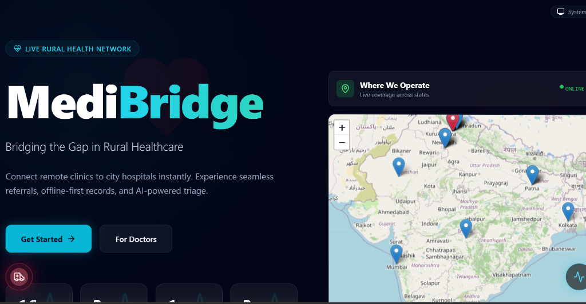
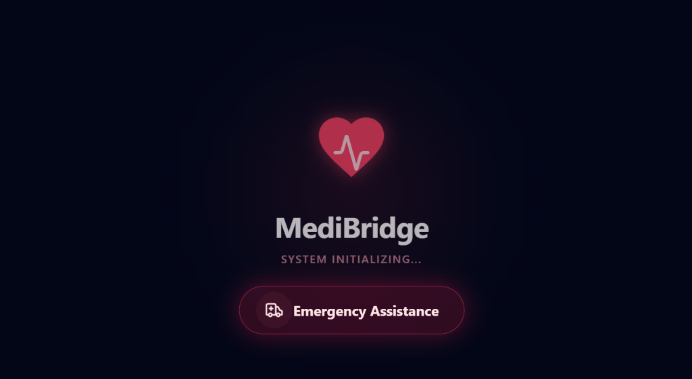

Project Overview
MediBridge is a healthcare referral and outreach coordination system created to connect rural Primary Health Centers (PHCs), community health workers, and specialist doctors located at district hospitals.
In many rural communities, patients travel long distances to district hospitals without knowing if the required medical specialist is available, leading to lost time, unnecessary travel costs, and delayed critical treatment.
Healthcare Bottleneck
Lack of centralized referral communication causes severe diagnostic delays. Primary clinics operate in isolation from specialized medical centers, resulting in manual paper trails that frequently get lost or misrouted.
Architecture & Key Features
Multi-Tier Role Portals: Segmented experiences for rural citizens, local clinic workers, and district doctors to keep tasks clear and accessible.
Automated Case Routing: Patient cases recorded at village health posts are automatically directed to the corresponding specialist queue based on preliminary symptoms.
Referral Status Tracking: Real-time status indicators let clinics and patients verify if appointments and specialist reviews are confirmed before traveling.
Low-Bandwidth Optimized: Lightweight frontend design built to load reliably over slow mobile data connections typical in rural areas.
Technology Stack

MediBridge — Unified Health Referral Platform & Mobile Portal

MediBridge — Live Rural Health Network & Operations Map

MediBridge — System Triage & Emergency Assistance Portal